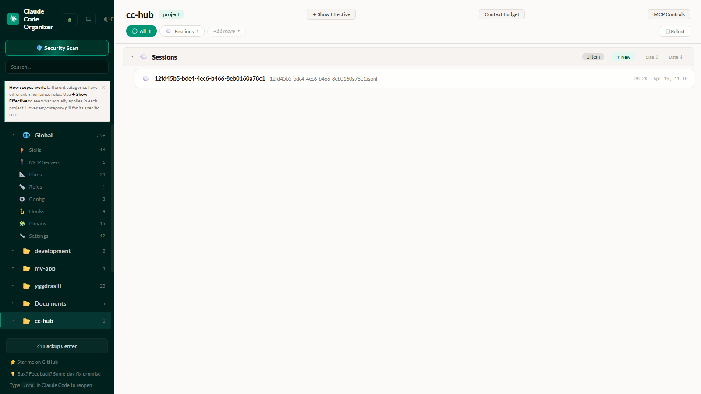
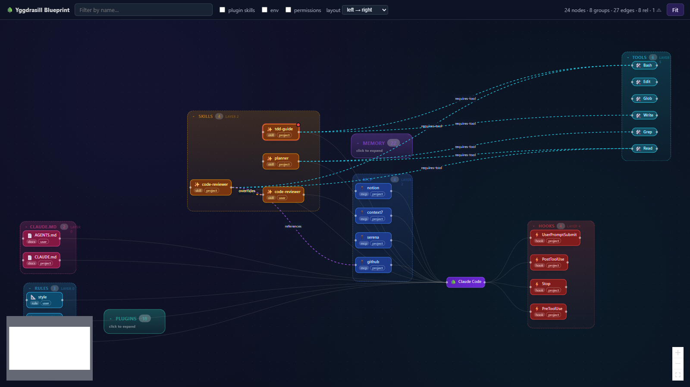

CCO
tree + list
mcpware/claude-code-organizer — browses categories, one count per row

Yggdrasill
graph + relationships
claude in the middle, loading order left→right, colored overrides / requires-tool edges
